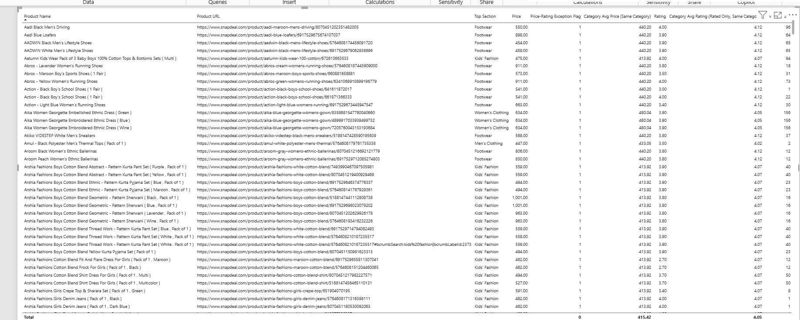
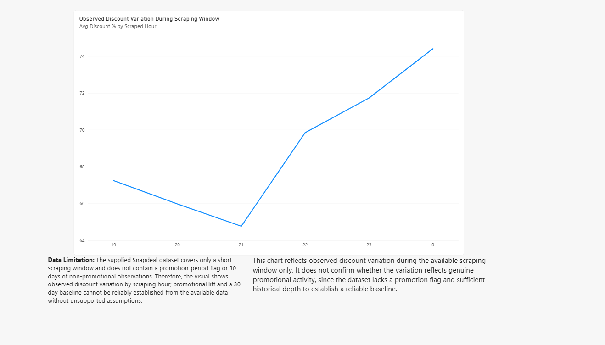
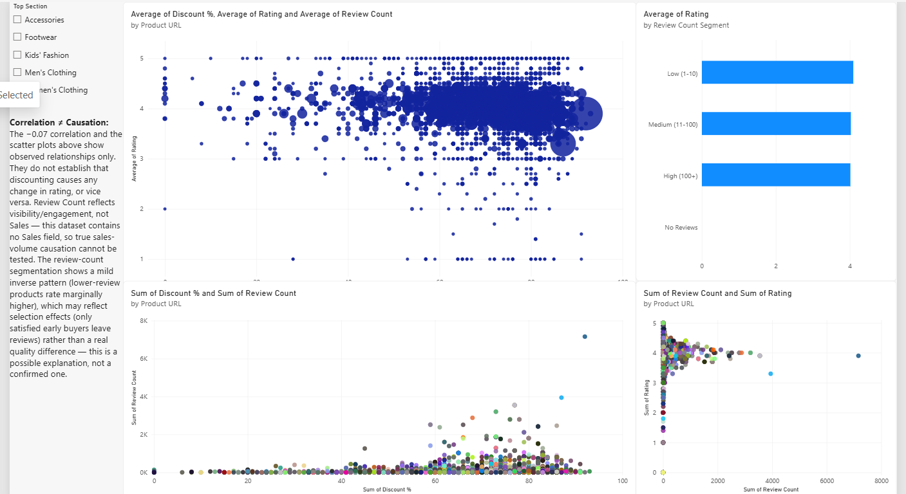
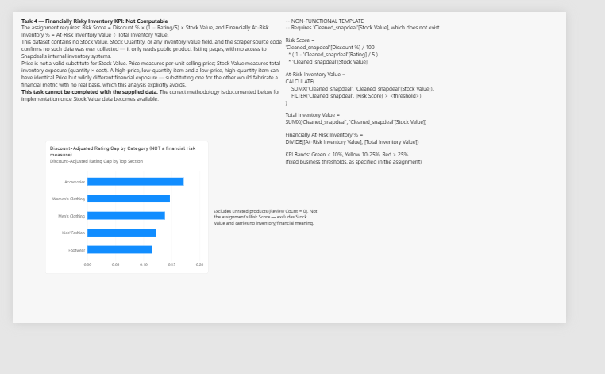
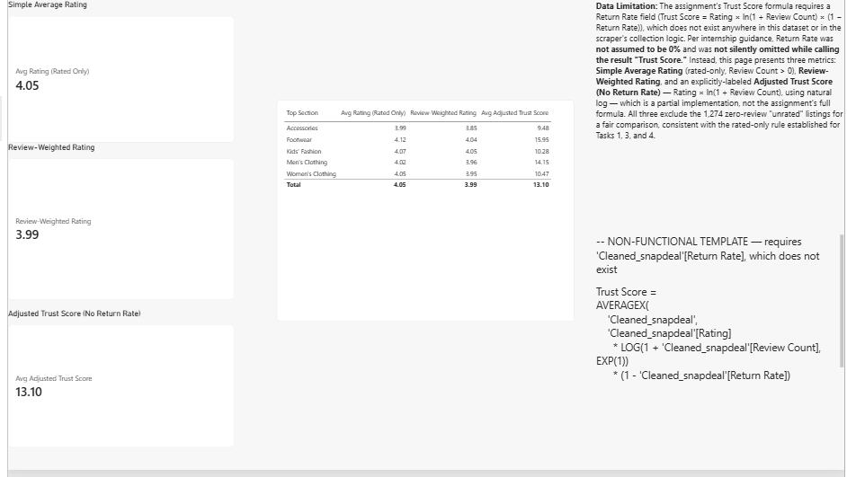
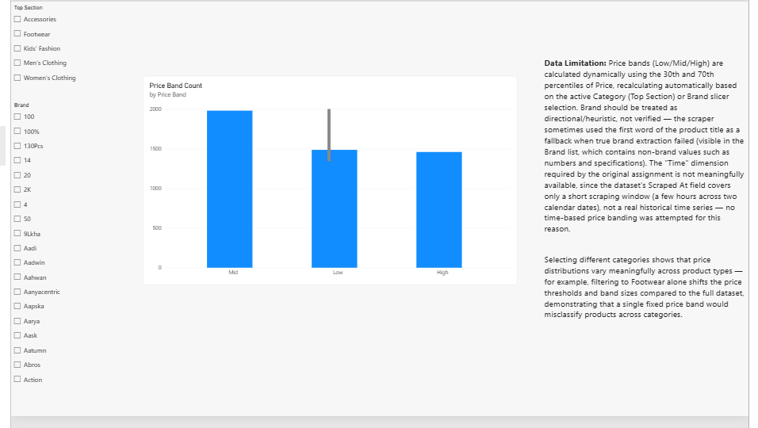

Task 1 — Pricing vs Satisfaction Exceptions partial
Built: products priced above their own category average and rated below their category's rated-only average, using measures only. 664 of 4,922 products meet both conditions.
Not computable: the Risk Score condition (needs Stock Value) and the below-median-sales condition (needs Sales).

Task 2 — Promotion Effectiveness partial
Built: average discount by scrape hour, in true chronological order (19 → 0).
Not computable: a 30-day baseline, promotional lift and a promotion flag. The data covers about 5 hours across two dates and has no promotion indicator, so high discounts were not treated as promotions.

Task 3 — Discount vs Rating complete
Observed: the correlation between discount % and rating (rated products only, n = 3,814) is −0.07, essentially no linear relationship. Average rating is about 4.0–4.1 across low, medium and high review-count groups.
Caution: this is correlation, not causation. Review count reflects visibility, not sales, and sales causation cannot be tested because there is no Sales field. The built-in scatter trend line was unavailable, so a calculated correlation coefficient is shown instead.

Task 4 — Financially Risky Inventory not computable
The KPI depends on Stock Value, which does not exist. Price was not used as a substitute, because price and inventory exposure measure different things. The page documents the exact DAX for when Stock Value is available, plus a clearly labelled Discount-Adjusted Rating Gap chart that is not a financial measure.

Task 5 — Trust-Weighted Rating partial
Built (rated products only): simple average rating 4.05, review-weighted rating 3.99, and an Adjusted Trust Score of 13.10 (Rating × ln(1 + Review Count)).
Not the full formula: Return Rate is not in the data and was not assumed to be 0%, so the score is labelled as adjusted rather than the assignment's Trust Score.
Example: Footwear (4.12 average rating, median 48 reviews) scores 15.95, while Accessories (3.99, median 6 reviews) scores 9.48. Similar ratings, very different review support.

Task 6 — Context-Aware Price Banding complete
P30 and P70 price thresholds are measures that recalculate for whatever category or brand is selected. Checked on Footwear alone, the bands moved to Footwear's own thresholds (₹287 and ₹530) instead of the overall ones (₹299 and ₹467). A calculated column would be fixed at refresh time and could not react to slicers.
